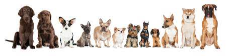

About Us
Where your dog waggles more and barks less!
Ever since I was a kid, dogs have been some of my best friends. I grew up helping my Aunt Maria in her dog grooming salon, The Clip-n-Fluff. It was only natural that this love for pets would develop into my life's work. After college, I managed a local veterinary clinic for six years, until 2003, when my aunt was getting ready to retire and wanted me to take over her business. I saw the need for a place where dogs of every breed and size could play and get some TLC while their families were at work or out of town. And so, that year, Pampered Pups was born. We''ve been pampering dogs ever since, and they haven't stopped wagging their tails.
Pampered Pups is just as popular with owners as it is with their pets. Our services and hours are tailored to meet the needs of busy pet owners who want their "best friends" treated with the affection and care they get at home. Come see for yourself. Stop in for a visit, and bring your dog along with you.
Dee Ramos
Owner / Operator
Pampered Pups
Fetch Service
We also offer pick-up and delivery services within a 20-mile radius of the metro area. That's right! We'll fetch your dog and bring him back when you can't. Just give us a 24-hr notice, and we'll be at your door in the morning, and back again at the end of the workday in our climate-controlled Fetch Mobile.
Rates
$12 for One-way Trip
$20 for Roundtrip
Business Hours
Monday - Saturday: 7:30 AM - 6:00 PM
Sunday: Closed